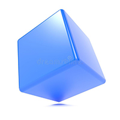

DESCRIPCION DEL CUBO
Se le llama cubo a un pieza u objeto denso o solido en forma de caja que posee seis lados o cuadrados iguales donde cada lado adyacente forma un Angulo recto y sus dimensiones también son iguales a este cubo, también se le llama hexaedro regular cuando de geometría se habla. Por otra parte un cubo es una cavidad de forma cilíndrica, con una abertura u orificio más amplio y dilatado por la boca que por el fondo, con un asa en la orilla superior para poder sostenerlo.
Cubo 1
Publicidad
Un cubo es un fragmento o pieza central en donde se ajustan o se acoplan los radios de una rueda. También este término suele utilizarse en matemáticas para hacer mención a dichas cuentas con el fin de multiplicar un número expresión matemática tres veces por sí mismo. Otro de su significado se le otorga al objeto o vasija con figura de cono invertido que posee un puño o mango y suele utilizarse en el hogar para colocar los desperdicios del mismo. Otro ejemplo de cubo se le da a una pieza que se le enrosca la cuerda a un reloj de bolsillo.
También se define como cubo al estanque o embalse de los antiguos molinos para poder recoger el agua cuando estaba escasa.
Es muy probable y factible encontrarnos muchos objetos con forma de cubo. Entre ellos uno de los más comunes es el dado que es utilizado en gran cantidad de juego de mesa y azar, y a los dados se les define como cubos ya que cada una de sus caras es exactamente igual en cuanto a dimensión.